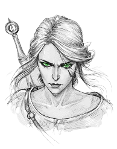

"Anxiety is never irrational, Geralt thought to himself. Aside from psychological disturbances. It was one of the first things novice witchers were taught. It's good to feel fear. If you feel fear it means there's something to be feared, so be vigilant. Fear doesn't have to be overcome. Just don't yield to it. And you can learn from it."

NOMBRE: Kelly H. Lannister
👥FILIACIÓN: Lannister
👨👩👧👧FAMILIA:
Sterven Lannister (padre)
Xena Stark (madre)
Amy Lannister (hermana)
Luna Lannister (hermana)
🎭ALIAS: Ninguno
⚕️ESTADO: Soltera
📆EDAD: 16
🤱🏼NACIMIENTO: No está en los registros.
🏰ORIGEN: Lannister
📯TÍTULO: Princesa de Occidente.
🎭APARIENCIA Y CARÁCTER:
De cabello plata, nadie sabe de dónde viene. Ojos
verde esmeralda.
Una
cicatriz que me cruza la mejilla izquierda. Altura media y cuerpo atlético.